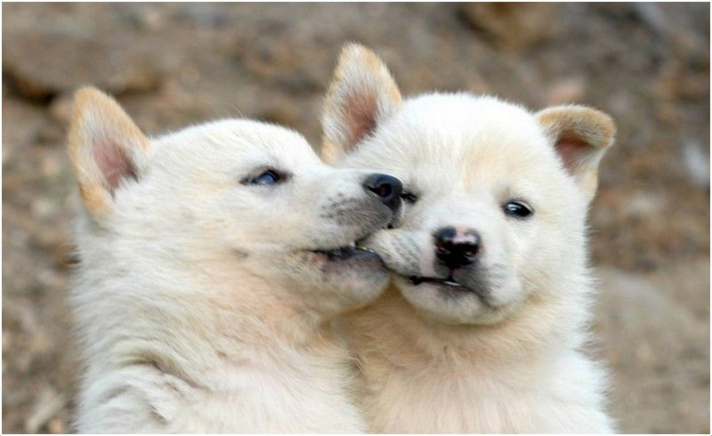

Jindos are double-coated spitz-type dogs. Distinguishing the Jindo breed from mongrel and other breeds is often done by close examination of cranial and facial features and by analyzing the proportion of the head to the body. In addition, the breed exhibits sexual dimorphism with females having more angular heads than males.[4] The keen and alert appearance of the Jindo gives the impression of intelligence, strength, loyalty, and agility. Other features include forward-pointing upright ears and a double coat.
Korean Jindo owners have traditionally divided Jindos into two body types:
- Tonggol or Gyeopgae: This type is more muscular and stocky with the Korean National Dog Association (KNDA) recognizing an equal proportion of height at the withers to length (10:10). The depth of chest is approximately equal to one-half the height at the withers. The loin is also typically shorter.
- Hudu or Hotgae: This type is more slender with a somewhat less depth of chest and a slightly longer loin. Moreover, other physical features tend to have an increased length, such as the ears, muzzle, and head. This results in an appearance that is longer than tall with the KNDA recommending a height at the withers to length ratio of 10:11.
The KNDA also recognizes a third body type called Gakgol which is a gradually emerging combination of the two traditional types, retaining the length of body of the Hudu and the depth of chest of the Tonggol.
In regards to the Jindo's body appearance, the United Kennel Club currently states, "The squarely built Jindo has a chest that is moderately deep but not too broad. At its deepest point the chest reaches to, or just above, the elbow. The brisket is well developed and the ribs are well sprung. The back is strong and straight and the loin is well muscled, taut, lean and narrower than the ribcage. There is considerable tuck up."
Jindos come in five colors:
- White (baekgu) - This color is actually an off-white or ivory shade with tan or light brown around the tips of the ears, the back of the hind legs, and the tip of the tail. Some whites may have a subtle tan stripe running from the head, down the top line, to the tail.
- Fawn (hwanggu) - The color of well-ripened wheat.
- Grey (heukgu) - This coat looks gray from a distance but is actually made up of individual white, black, and fawn colored hairs.
- Black and tan (Naenunbagi) - Black head and upper body with tan on the muzzle, belly, and paws, and an eye-shaped tan spot over each eye.
- Brindle (beulindeul) - Also known as "Tiger" pattern. Thin, dark brown or black stripes like a tiger's on a fawn base. These stripes appear at an early age.
-
Some Jindo Island residents value black, black/red, and red/white Jindos as good hunters. The United Kennel Club recognizes six different coat colors: white, red fawn, wolf grey, black, black and tan, and brindle (tiger pattern).